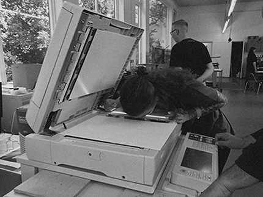

<!DOCTYPE html>
<html lang="en">
<head>
    <meta charset="UTF-8">
    <title>Maria Kociszewska</title>

    <link href="styles.css" rel="stylesheet">
</head>
<body>

    <nav>
        <a href="/" class="homepage">Maria Kociszewska</a>
        <ul>
            <li><a href="index.html">Work</a></li>
            <li>&middot;</li>
            <li><a href="about.html">About</a></li>
            <li> &middot;</li>
            <li><a href="contact.html">Contact</a></li>
        </ul>
        <p class="caption">Web &amp; Graphic Design</p>
    </nav>

    <div class="about_container">
        <p class="about">Maria Kociszewska (PL) is a graphic designer and web developer based in Warsaw.
            Her practice is focused on artistic and commercial projects within the fields of art, culture and commerce.
            Projects include visual identities, editorial design and websites.
            <br/>
            <br/>
            Full CV upon <a href="mailto:mj.kociszewska@gmail.com" target="_top">request</a>
        </p>

        

    </div>

    <div class="info">
        <table>
          <tr>
              <td>
                  <h5>EDUCATION</h5>
                  <ul>
                      <li>Coders Lab front - end web developer bootcamp</li>
                      <li>Van ̥Eyck Summer Academy Participant (Masstricht, NL)</li>
                      <li>Academy of Fine Arts in Warsaw - Faculty of Design <br/>/ Department: Product and Visual Communication Design</li>
                  </ul>
              </td>

              <td>
                  <h5>SELECTED CLIENTS / COLLABORATIONS</h5>
                  <ul>
                      <li>Spoken love</li>
                      <li>Blindead</li>
                      <li>Raiffeisen Group</li>
                      <li>Polsat</li>
                      <li>Warner Music Group</li>
                      <li>SoundsUp Records</li>
                  </ul>
              </td>

              <td>
                  <h5>SKILLS</h5>
                  <ul>
                      <li>Excellent knowledge of: Adobe Photoshop, InDesign, Illustrator</li>
                      <li>Very good knowledge of: FontLab, Photoshop Lightroom, Corel Draw, Rhinoceros, AutoCad, SolidWorks</li>
                      <li>html & CSS beginner level</li>
                      <li>Also: drawing, painting, sculpting, screenprinting, modelling in various stuff, 3d printing</li>
                      <li>Operating systems: OS X, Windows </li>
                  </ul>
              </td>
          </tr>
        </table>
    </div>

    <p class="footer">Copyright Maria Kociszewska&copy;</p>

</body>
</html>